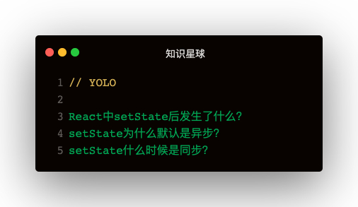

解答
调用setState之后，会经历一下几步：
- React会将传入的参数对象与组件当前的状态合并，然后触发所谓的调和过程
- 经过调和过程，React会以相对高效的方式根据新的状态构建React元素树并且着手重新渲染整个UI界面
- 在React得到元素树之后，React会自动计算出新的树与老树的节点差异，然后根据差异对界面进行最小化重渲染
- 在差异计算算法中，React能够相对精确地知道哪些位置发生了改变以及应该如何改变，这就保证了按需更新，而不是全部重新渲染
setState为什么默认是异步
假如所有setState是同步的，意味着没执行一次setSTate时，都重新vnode diff + dom修改，这对性能来说是极为不好的。如果是异步，则可以把一个同步代码中的多个setState合并成一次组件更新。
setState什么时候是同步
- setTimeout
- 原生事件